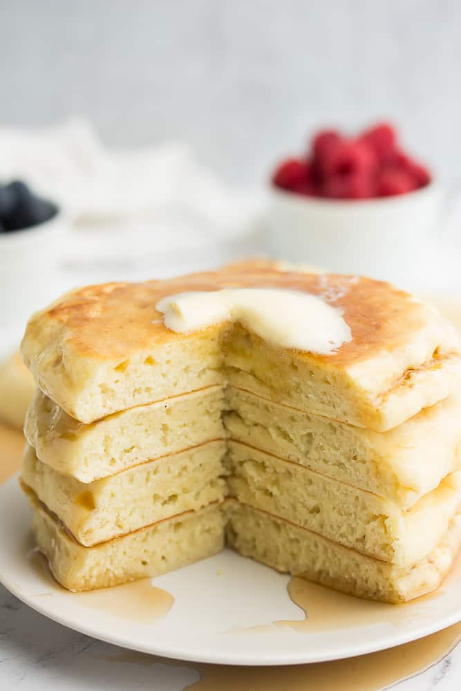

Pancakes

Description
Ingredience
- 1 1/2 cups all purpose flour
- 1 tablespoon baking powder
- 1/2 teaspoon salt
- 2 tablespoons granulated sugar
- 1 cup soy milk
- 1/2 cup water
- 2 tablespoons canola oil
Steps
- In a large bowl, whisk together the flour, baking powder,
salt and sugar.
- Pour the milk, water and oil into the bowl with the dry i
ngredients, and stir with a large spoon until just combined.
A few lumps are okay; do not over mix or your pancakes
won't be as fluffy.
- Heat a large griddle or pan over medium-high heat. Grease
the pan with vegan butter or coconut oil, and drop about
1/3 cup of the batter onto it. Cook until bubbles form,
then flip and cook until golden brown on the other side,
about 1-2 minutes. Repeat with all the remaining batter.
- Serve with vegan butter, pure maple syrup and perhaps some
fresh fruit.